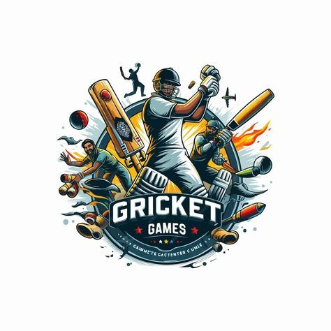
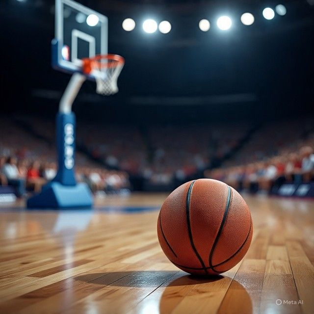
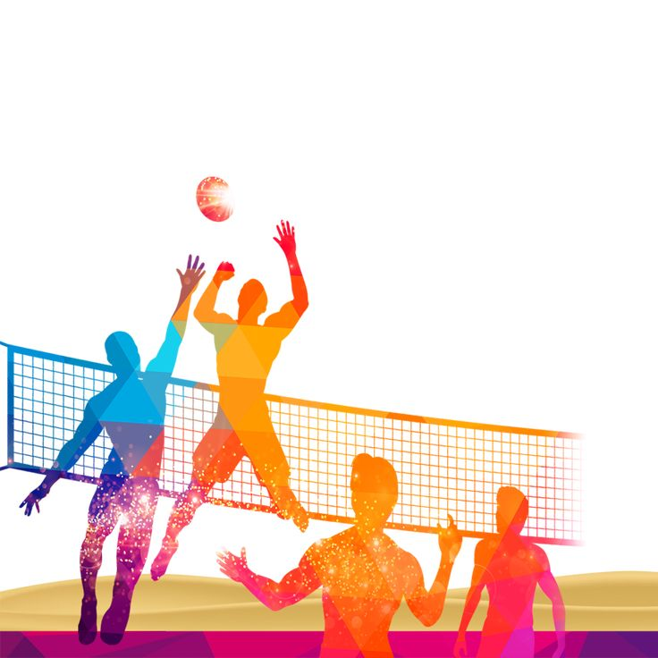

learning html step by step (day1-3)
| sports | players | equipments |
|---|---|---|
| cricket | 22 | ball,bat,wicket |
| basketball | 10 | ball,net |
| football | 22 | ball,pitch |
| volleyball | 12 | ball,net |

Cricket's history began in SE England, possibly as early as the 13th century, evolving from children's games into a formal sport by the 17th century, with its first written reference in 1597

Basketball was invented in 1891 by James Naismit, a physical education instructor in Springfield, Massachusetts, as a less injury-prone indoor winter sport using peach baskets and a soccer ball, quickly spreading through the YMCA network and evolving with rule changes like the introduction of dribbling and backboards, eventually leading to professional leagues like the NBA
Football's history spans ancient ball games in China (Cuju) and Mesoamerica, evolving through medieval "folk football" in Europe, to the codification of modern rules in 19th-century England by the Football Association (FA) in 1863, establishing association football (soccer) and rugby football, leading to FIFA's formation (1904) and global spread.

Volleyball originated in 1895 when William G. Morgan, a YMCA director in Holyoke, Massachusetts, created "Mintonette" as a less strenuous indoor sport,
createdby:HM-KHAN-html day3 practice